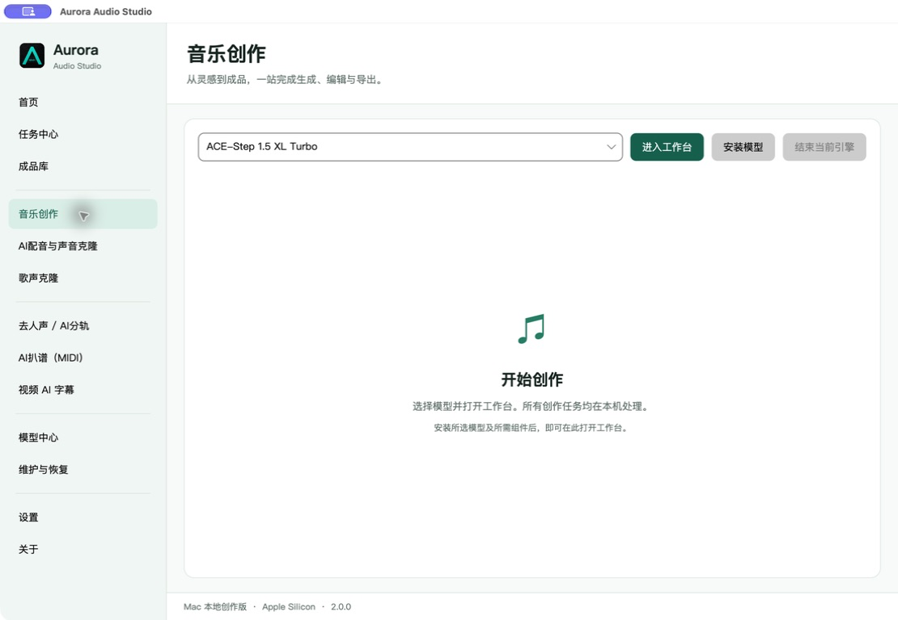
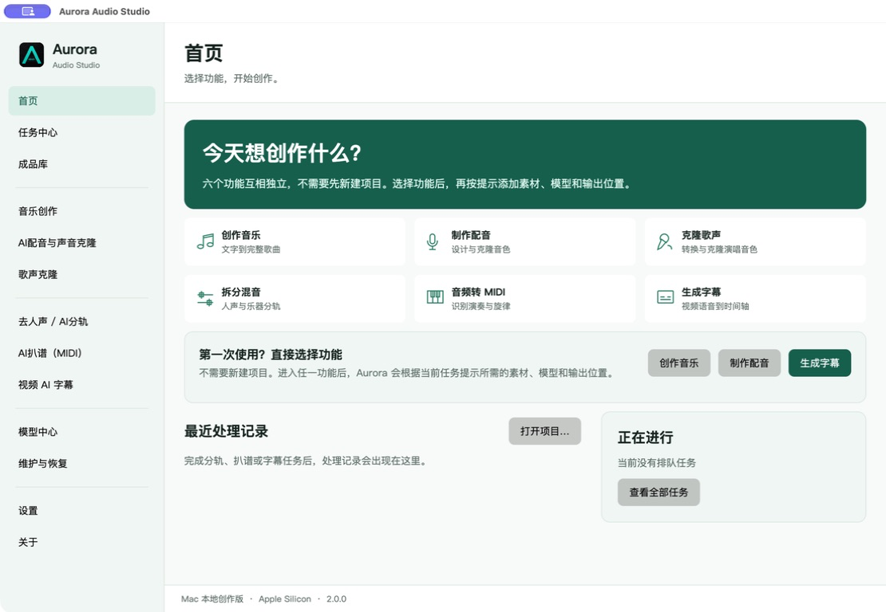
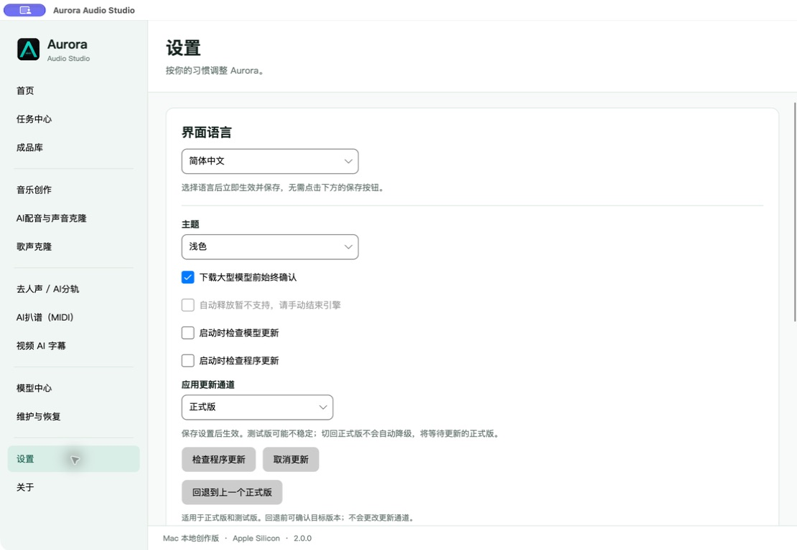

Windows
Windows 10 / 11 · x64
- 加速
- NVIDIA RTX 推荐，按模型要求选择
- 安装
- 标准 EXE 安装程序
- 签名
- 当前 Windows 包未签名
音乐、配音、歌声、分轨、MIDI 与字幕，在 Windows 和 Mac 本地完成。
Aurora 2.0 测试阶段 · 1.9.9 正式版提供更新通道 · 测试版由你选择

两端同版发布，各自检查、下载和安装更新。模型不随安装包捆绑。
Windows 10 / 11 · x64
macOS 26+ · Apple Silicon
安装前预留模型中心建议的空间。Beta 可能不稳定；切回正式版不会自动降级。系统权限提示由你确认。
先从一段短样本开始。任务保留素材和参数，成果支持试听、字幕校对、MIDI 信息与导出；模型按需安装，版本可检查。
应用本身不提供云端生成服务。下载与更新会连接 GitHub、Hugging Face 或模型注明的官方来源。

模型的文件齐全、入口可用与真实推理通过是不同状态。六个仅管理型模型在两端均不提供推理入口。
Mac 不提供 MiniMax-Music3 当前 CUDA 后端及 Faster-Whisper XXL 二进制；字幕由原生 Whisper 实现。模型精度、随机性和硬件不同，不承诺两端生成结果逐字节相同。
